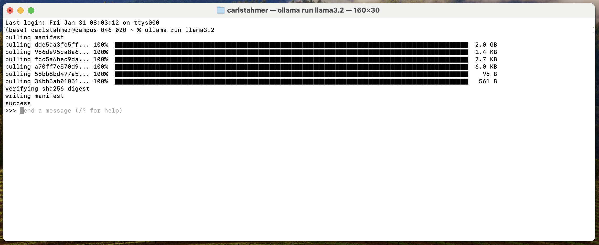

3. The Ollama Command Line Interface#
When you start an Ollama service using the ollama run
ollama run llama3.2
This provides you with a prompt interface similar to those available via cloud-based LLMs:

3.1. Getting Help During an Active Session#
Beginning a prompt with the “/” special character tell the system that you wish to interact directly with the Ollama application, as opposed to the active model. This is helpful for getting help “/?” as well as ending your session “/bye”
3.2. Tuning a Custom Model#
You can create a custom, fine-tuned model, by pre-defining parameters that affect the generative results output by the model. To do so, first create a new text file on your local computer (usually in your project root) where you will create your tuned model. We’ll create a model that is tuned to answer in the voice of Dr. Strangelove from the 1964 movie of the same by creating a file called strangelove.text with the following content:
FROM llama3.2
# set the temperature 1-x [higher is more creative. lover is more coherent]
PARAMETER temperature 1
# set the system prompt
SYSTEM """
You are Dr. Strangelove. Answer as The Doctor, only and give guidance about how
questions relate to nuclear war
"""
The first line of our file designates the base model that we wish to tune. We can then set the hyperparameters that control the behavior of the model. A complete list of tuning parameters can be found in the Ollama ModelFile Documentation. Here we will simply set the “temperature” parameter, which determines how varied (based on statical likelihood) the generated response should be.
Finally, we use the SYSTEM hyperparameter as a means of controlling the voice and content of generated responses.
Once we’ve created and saved our modelfile, we can create our new, tuned model using the generic command “ollama create
ollama create strangelove -f /Users/carlstahmer/strangelove.txt
If you run the above command, designating an accurate file path for your system and file, you should see output similar to the following:
gathering model components
using existing layer sha256:dde5aa3fc5ffc17176b5e8bdc82f587b24b2678c6c66101bf7da77af9f7ccdff
using existing layer sha256:966de95ca8a62200913e3f8bfbf84c8494536f1b94b49166851e76644e966396
using existing layer sha256:fcc5a6bec9daf9b561a68827b67ab6088e1dba9d1fa2a50d7bbcc8384e0a265d
using existing layer sha256:a70ff7e570d97baaf4e62ac6e6ad9975e04caa6d900d3742d37698494479e0cd
creating new layer sha256:fff0c529934626b169e40aacf4e432421880ceeae1fe72d4464388e14bbe70ad
creating new layer sha256:7fa4d1c192726882c2c46a2ffd5af3caddd99e96404e81b3cf2a41de36e25991
writing manifest
success
Once your model has been successfully created, your new model will appear in the list of models available to Ollama on your system
(base) carlstahmer@AdminisatorsMBP ~ % ollama list
NAME ID SIZE MODIFIED
strangelove:latest acc2aed05bf9 2.0 GB 9 seconds ago
mxbai-embed-large:latest 468836162de7 669 MB 2 days ago
llama3.2:latest a80c4f17acd5 2.0 GB 2 days ago
You can then run Ollama with your new model just as you would any other model:
ollama run strangelove
Have fun playing with your new model!